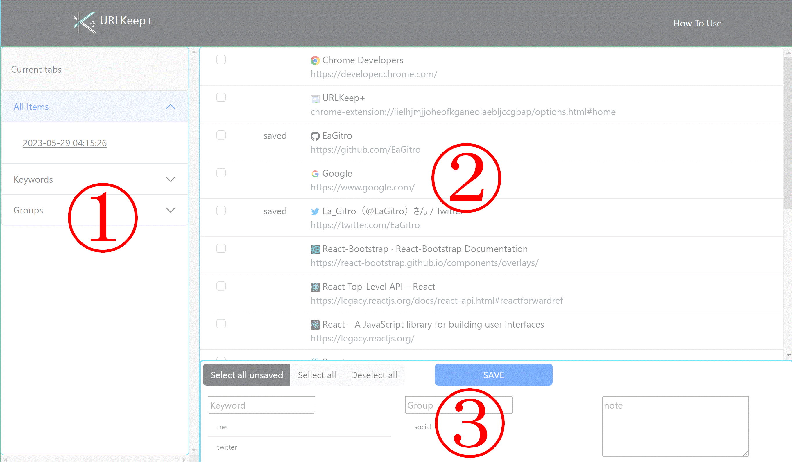

This is a Chrome extension, which manages tabs and URLs, and save URLs with keywords, group names, and note.


You can choose the mode.
If you select "Current tabs" , you can see what you open in your
browser now in Main Panel (default).
If you select "All items" , you can see when you saved
items. Then, to click a certain date, you can see what you have saved at this
time.
If you select "keywords" or "Groups"
,
you can see the keywords or the group names you saved. To click the keyword or group name, items
saved
with the keyword/group are displayed.
Display current tabs or saved items.
If you select "Current tabs" , you can see what you open in your browser now. And "saved" flag is attached on the items you have saved. When you click the item, you will jump to the tab.
If you select the other mode in Side Menu, you can see the items that you saved with a certain category. When you hover over the items, the bubble that contains the date when you saved, the keyword, the group name, and the note is displayed.
Save current tabs with certain categories, rewrite information, or delete items.
If you select "Current tabs" , you can save current tabs with
certain
categories such as a keyword, group name, and note.
When you enter category information, you can register a new keyword or a new group name, or choose them from
what you have entered before.
If you select the other mode in Side Menu, you can open the selected items, or you can rewrite the information of the selected items, or delete the selected items.
The latest manuals are available at my GitHub repository (https://github.com/EaGitro/URLKeepPlus).
EaGitro
Contact(in English or Japanese):
© EaGitro 2023 All Rights Reserved.